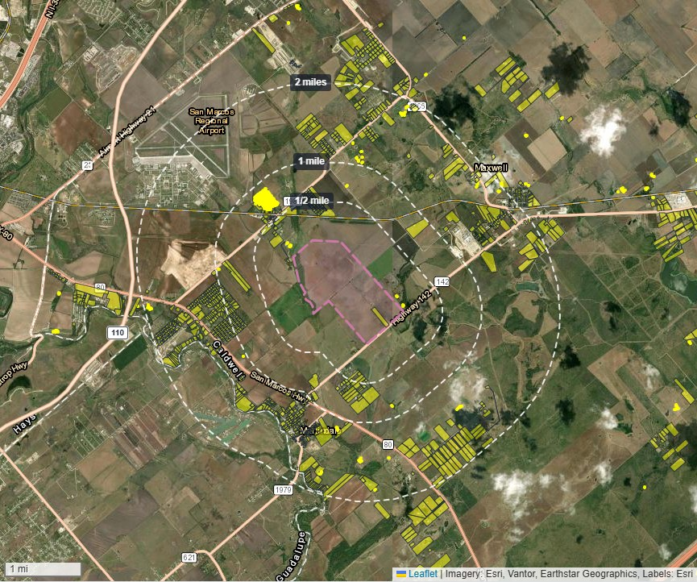
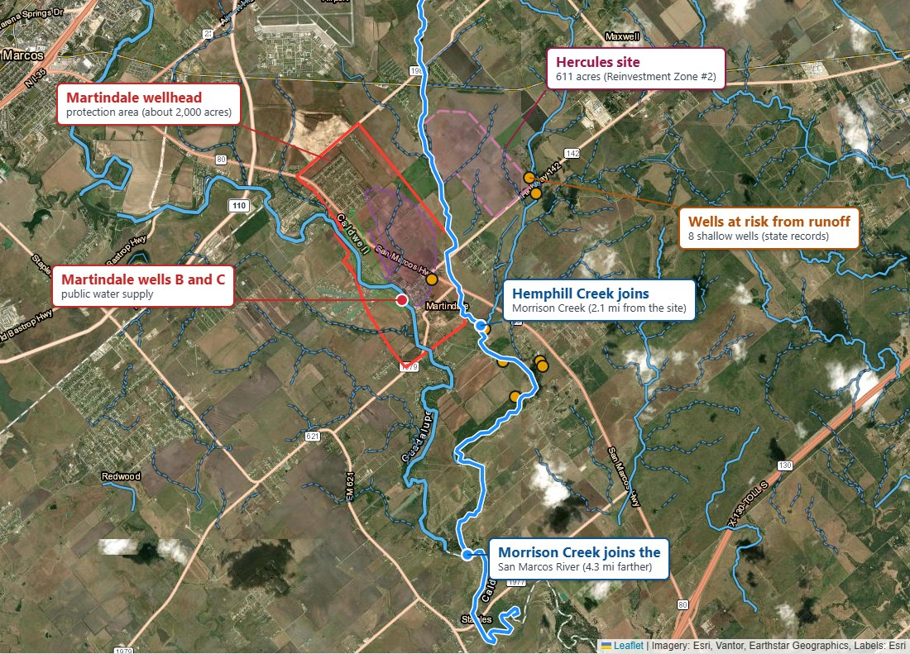

At a glance
Each section below has a short summary. Select "Show the data and sources" to see the full figures and where they come from. The site and the homes around it are shown in the map below. Public meeting records for Project Hercules are on the Prospective Tenants page.
Where the site is, and the homes around it
The Hercules site is Caldwell County's Reinvestment Zone #2, 611 acres north of SH 142 between SH 80 and FM 1984.21 About 1,200 people lived within 1 mile of the site's edge and about 3,800 within 2 miles in the 2020 Census.38

Show the data and sources
| From the edge of the site | People (2020 Census) | Residential parcels | Buildings on home tracts over 25 acres |
|---|---|---|---|
| Within 1/2 mile | about 150 to 230 | 57 | 6 |
| Within 1 mile | about 1,200 | 206 | 152 |
| Within 2 miles | about 3,700 to 3,900 | 884 | 194 |
People: 2020 Census block populations (Caldwell and Hays counties) within each ring; ranges show two counting methods (share of each block's area inside the ring, and blocks whose center is inside the ring).38 Homes: 2026 Caldwell CAD certified roll and Microsoft building footprints, Caldwell County only, as shown on the interactive map. Three homes are within 0.1 mile; the closest house is about 240 feet from the boundary. A home is a parcel whose appraisal record shows a house or mobile home, or that has a homestead exemption. All counts are this site's measurements.
Places within 2 miles of the site's edge (OpenStreetMap):40
- Immaculate Heart of Mary Catholic Church, Martindale: about 1.2 miles
- A second church west of the site: about 1.2 miles
- Gary Job Corps campus: about 1.9 miles
Rings are measured outward from the edge of the 611-acre zone and were drawn by this site. The interactive map opens at this view with the site, distance rings, homes, streams and floodplain turned on. Zoom out or use the layer list to see city limits, the ETJ and other layers. Imagery: Esri.
What rules apply on the site
About 319 of the site's 611 acres are covered by the SMART Terminal development agreement, which sets limits on that land. The rest of the site is unincorporated Caldwell County. The City says annexation would come "after construction is completed."1
About 319 acres: SMART Terminal agreement today
- Impervious cover: "shall not exceed 70 percent of the entire gross acreage," and 90 percent of any lot (Section 2.03)
- Noise limits under the City's development code, Section 7.4.2.1 (Section 2.05)
- No "storage of hazardous materials or explosives, except for fuels contained in vehicles" (Exhibit D, #5)
- No "bulk storage of fuel, liquified petroleum and flammable liquids" (Exhibit D, #23)
Source19
On November 9, 2026, Franklin Mountain applied to remove "approximately 319.589 acres of land from the development agreement" (case PDA-22-07(B)).39 City staff said in a November 20, 2026 meeting with residents that this is the Franklin Mountain land in the Hercules site, and the City's notice of a City Council public hearing on the request, set for 6:00 p.m. on December 1, 2026, describes Project Hercules as "the site subject to the land to be removed from the development agreement boundary." The notice states that "the City Council may approve, deny, or modify the requested amendment."55 Land removed from the agreement would no longer be subject to its terms.
Caldwell County will hold a public hearing at 9:30 a.m. on December 22, 2026 "to consider the approval of a tax abatement agreement with Daimler Truck North America LLC" for "a Vehicle Manufacturing and Assembly facility" in Reinvestment Zone #2. The County's notice gives "The best estimate of capital investment of all such improvements subject to the requested tax abatement" as "$699,000,000."56
The 319-acre figure is this site's measurement of the overlap between the zone and the development agreement land.
1. Hercules would be larger than Daimler's largest U.S. truck plant
Daimler says the Hercules building would be about 2 million square feet on about 611 acres.2 Its Cleveland, North Carolina plant is about 1.2 million square feet on about 178 acres.4
Show the data and sources
| Hercules (proposed) | Cleveland, NC | Mount Holly, NC | |
|---|---|---|---|
| Builds | Medium and heavy-duty trucks2 | Class 6-8 diesel trucks5 | Medium-duty box trucks6 |
| Site | ~611 acres2 | ~178 acres4 | |
| Building | ~2 million sq ft2 | ~1.2 million sq ft4 | |
| Workers | "thousands"2 | ~2,2005 | ~1,6506 |
| Trucks per day | ~855 | ~1106 | |
| VOC emissions | 390-585 tons/yr ESTIMATE | 233-351 tons/yr (2019-2024)541 | 123-175 tons/yr6 |
| Toxic chemicals to air | ~50,000 lbs/yr ESTIMATE | 29,166 lbs (2024)8 | |
| Hazardous waste | ~250 tons/yr ESTIMATE | ~152 tons (2023)9 | ~87 tons (2023)9 |
| Water use | ~300,000 gal/day2 | ||
| Schedule | Construction 2027, operations 20292 | Opened 19894 |
Rows marked ESTIMATE are this site's calculations: Cleveland's figures scaled by building size (2.0 ÷ 1.2 million sq ft, about 1.7 times). They are not figures from Daimler or any agency. Daimler's CEO said in August 2026 that the new plant will be the company's largest U.S. truck plant.3
2. Cleveland is permitted as a "major source" of air pollution
North Carolina's permit review calls the Cleveland plant "a major source for volatile organic compounds (VOCs) and hazardous air pollutants (HAPs)."5 Daimler says the main air emissions at Hercules would come from "vehicle painting and coating operations."2
For perspective: the six industrial sites in Caldwell and Hays counties that report to TCEQ's emissions inventory together emitted 245 tons of VOCs in 2024 (Caldwell 80, Hays 165), shown by the blue column. This does not include vehicles or smaller businesses below TCEQ's reporting thresholds. The Cleveland plant alone emitted 328 tons in 2023.355
The 100-ton and 250-ton lines are the permitting thresholds explained below. The Hercules bar is this site's estimate: Cleveland's 2019-2024 range scaled by building size (2.0 ÷ 1.2, about 1.7 times). It is not a figure from Daimler or TCEQ; actual emissions depend on production volume and paint technology.
Show the data and sources
| VOC emissions (tons/yr) | 2019 | 2020 | 2021 | 2022 | 2023 | 2024 | Permit limit |
|---|---|---|---|---|---|---|---|
| Cleveland, NC5 | 351 | 233 | 260 | 298 | 328 | 30541 | 1,406 |
| Mount Holly, NC6 | 175 | 123 | 175 | 164 | 157 | 17041 | 750 |
| Hercules ESTIMATE | 390 to 585 tons per year (Cleveland range × 1.7) | not yet public | |||||
Industrial VOC emissions reported to TCEQ, 2024 (all sites meeting state reporting requirements):35
| County | VOC (tons) | Largest reporting sites |
|---|---|---|
| Caldwell | 80 | Oasis Pipeline, Prairie Lea Compressor Station (48); Flint Hills Resources, Mustang Ridge Terminal (22); Permian Highway Pipeline, Lockhart Compressor Station (7); 130 Environmental Park (3) |
| Hays | 165 | Texas Lehigh Cement (121); Hays Energy Facility (44) |
| Caldwell + Hays | 245 | |
| Travis | 359 |
Under the Clean Air Act, a plant that can emit 100 tons a year of a regulated pollutant is a major source.11
Toxic chemicals Cleveland released to the air in 2024 (EPA Toxics Release Inventory):8
| Chemical | Pounds | What federal health agencies say |
|---|---|---|
| Xylene | 10,956 | Headaches, dizziness, nose and throat irritation, impaired reaction time, memory and vision. "Breathing low levels over a long period of time can cause similar effects." Xylenes "can travel through soil and can get into groundwater."14 |
| n-Butyl alcohol | 10,611 | Eye, nose and throat irritation, headache, dizziness, drowsiness.16 |
| 1,2,4-Trimethylbenzene | 7,435 | EPA lists the nervous system as a critical effect, with a long-term reference concentration of 0.06 mg/m³.15 |
| Methanol | 164 | |
| Total | 29,166 | |
| Hercules ESTIMATE | ~50,000 | Cleveland's 2024 total × 1.7 |
VOCs react with nitrogen oxides in sunlight to form ground-level ozone, which can aggravate asthma and other lung diseases.12 Caldwell, Hays and Travis counties are designated attainment/unclassifiable for the 2015 ozone standard.13 Cleveland was a large quantity generator of hazardous waste, about 152 tons in 2023.9 EPA's compliance database lists no formal enforcement actions at the Cleveland or Mount Holly plants in its current reporting period.10
How TCEQ permits a plant like this
TCEQ does not set a fixed emissions cap for a truck plant. The company applies for the limits it wants, and TCEQ reviews the application. The size of the request decides how much review it gets.
| VOC emissions | What applies |
|---|---|
| Any new plant this size | A state New Source Review air permit before construction, including Best Available Control Technology (BACT).3637 |
| 100 tons per year or more | A "major source" needing a federal Title V operating permit (also triggered at 10 tons of one hazardous air pollutant, or 25 tons combined).11 Cleveland and Mount Holly are Title V plants.56 |
| 250 tons per year or more | A "major source" under Prevention of Significant Deterioration (PSD), the full federal review for a new plant in an area that meets air quality standards. 250 tons applies to source types that are not among the federally named categories.36 |
Show the data and sources
TCEQ: "A minor source is a named or un-named source with regulated pollutant emissions that are less than the major source thresholds (100 tpy for named sources or 250 tpy for un-named sources)." A source that is major for one regulated pollutant is major for all regulated pollutants.36
Caldwell, Hays and Travis counties are designated attainment/unclassifiable for the 2015 ozone standard.13 Nonattainment review, which requires emission offsets, applies in areas that do not meet a standard.36
Cleveland's permit sets a plantwide VOC limit of 1,406.4 tons per year; its actual emissions were 233 to 351 tons per year from 2019 to 2024.541
3. Fuel, chemical storage and hazardous waste
The SMART Terminal development agreement prohibits hazardous material storage and bulk fuel storage on its land, which includes about 319 acres of the Hercules site.
SMART agreement, Exhibit D: prohibited uses
- #5: "Manufacturing or storage of hazardous materials or explosives, except for fuels contained in vehicles, locomotives, or railcars"
- #23: "Refining or retail sale or bulk storage of fuel, liquified petroleum and flammable liquids"
Source19
Hazardous waste inspections
Oregon DEQ inspected hazardous waste handling at Daimler's Portland plant on Nov. 18, 2025 and recorded 12 violations: six under the general rules for hazardous waste generators, three under the rules for preparedness, prevention and emergency procedures, one for used oil, one for universal waste and one under an Oregon state rule. EPA's compliance database has listed the plant in violation every quarter since. DEQ had issued a notice of noncompliance on Sept. 25, 2023, and issued a pre-enforcement notice on Feb. 24, 2026; no formal enforcement action or penalty is listed. At Cleveland, the database lists four hazardous waste inspections since November 2021, the most recent on April 9, 2025, and no violations from 2024 through 2026.10
Show the data and sources
Storage and equipment listed in Cleveland's air permit review:7 three 10,000-gallon diesel fuel tanks; four 10,000-gallon purge (solvent) tanks; one 4,000-gallon butanol tank; one 10,000-gallon antifreeze tank; two solvent distillation units; three dynamometers; two diesel fire pumps; one emergency generator.
Mount Holly's permit review lists:6 two 10,000-gallon diesel tanks; one 10,000-gallon and one 750-gallon gasoline tank; three 10,000-gallon purge solvent tanks; two 10,000-gallon antifreeze tanks; 15 paint spray booths; an e-coat line; three diesel fire pumps; three emergency generators.
Daimler's FAQ, asked "Does the company have a plan for hazardous material storage?": "Engineering standards include a state-of-the-art storage facility equipped with security measures, secondary containment, fire protection systems, and other engineered controls designed to prevent releases and minimize risk."2
Caldwell County Commissioner Ed Theriot to the City, April 21, 2023: "The County has no building code, fire code, zoning, or water quality regulations."20 The City's FAQ says the company "has agreed to petition for annexation into the City Limits after construction is completed."1
4. Homes near Hercules are as close as the Portland homes that reported odors
Neighbors who complained about paint odors from Daimler's Portland, Oregon truck plant lived 0.2 to 0.3 miles from it, and University of Portland students detected the odor 0.7 miles away.1833 Near the Hercules site, about 155 homes are within 0.7 miles of the site's edge, including about 60 within half a mile. The Portland plant drew more odor complaints than any other facility in Oregon after 2010, and Oregon's environmental agency confirmed Daimler was the source of the paint smell.18 Under a 2020 agreement, Daimler moved its top and clear coat painting "to its North Carolina location" and cut its Portland paint booths from five to one.17
Comparison of where odors were reported around Portland and where homes are around Hercules
What Oregon required of the Portland paint shop
To settle the odor case, Oregon wrote paint shop requirements into the Portland plant's air permit. Cleveland's North Carolina permit, which covers the plant where the top and clear coat painting went, has none of them.5052
| Requirement | Portland, OR (permit 26-2197-TV-01, 2021) | Cleveland, NC (permit 04625T40, 2025) |
|---|---|---|
| High-solids coatings | "Continue to use only high-solids pre-mixed coatings"; study and switch to high-solids clear coat. Daimler told DEQ in June 2021 it "has successfully converted to the use of high solids clear coat."5051 | No such condition |
| Spray guns | Reduced pressure (lower overspray) spray guns for all surface coating, with a preventive maintenance plan50 | No such condition |
| New or changed coatings | "Evaluate the odor potential of the revised coating" and use odor mitigation if it is worse50 | No such condition |
| Complaints | Daimler hotline; complaints sent to DEQ within 48 hours; complaint log kept and filed with DEQ each year1750 | No such condition |
| Paint booths | Five booths cut to one after top and clear coat painting moved to North Carolina17 | 25 paint spray booths; the permit lists no add-on air pollution control for any of them52 |
| VOC limit | Cut from 470 to 86 tons per year starting Jan. 1, 2023, "to reflect moving the majority of cab painting off-site and out of Oregon to other facilities owned by the permittee"50 | 1,405 tons per year; coatings must average no more than 3.5 pounds of VOC per gallon each month52 |
The Portland requirements came from a 2020 Best Work Practices Agreement under Oregon's nuisance odor rules and are enforceable only by the State of Oregon.50 The public North Carolina permit documents reviewed do not say which clear coat the Cleveland plant uses.
Show the data and sources
| Portland plant | Hercules site | |
|---|---|---|
| Measured from | The plant | The edge of the 611-acre site (the plant's location on the site has not been made public) |
| Nearest homes | University Park and Overlook boundaries about 0.2 miles; Arbor Lodge about 0.3 miles; University of Portland about 0.7 miles33 | 3 homes within 0.1 mile; the closest house about 240 feet from the boundary |
| Within 1/2 mile | 57 residential parcels and 6 buildings on larger home tracts | |
| Within 0.7 mile | University of Portland, where students detected the odor up to 20% of the time in winter18 | 123 residential parcels and 32 buildings on larger home tracts |
| Within 1 mile | 206 residential parcels and 152 buildings on larger home tracts; Butterfly Meadows and Hobson Ranch about 1 mile and Skyview less than 1 mile, as stated by a speaker at the County's Nov. 12, 2026 hearing34 | |
| Homes within 2 miles | 884 residential parcels, plus 194 buildings on home tracts over 25 acres, in Caldwell County (see the map) |
Hercules counts are this site's measurements from the map's homes layer (2026 Caldwell CAD roll and building footprints), Caldwell County only. See the homes around the Hercules site on the interactive map. Portland distances were measured on OpenStreetMap from the plant at 6936 N Fathom St. to the neighborhood boundaries.
OPB/EarthFix reported in 2016 that neighbors on the bluff above the plant described paint fumes that made their eyes water and gave them headaches, and that one family had filed almost 40 complaints in six years.18
OPB/EarthFix also reported that neighbors had "filed hundreds of complaints about the company," and that Oregon DEQ had received "more than 2,000 such air quality complaints since 2010" statewide, with Daimler the target of more than any other facility. During DEQ's odor study, "State investigators made 760 total attempts to detect odor," and "DEQ found odors during 3 percent of its observations." University of Portland students made "nearly 24,000" observations over a year; in winter months, "odor detections near Daimler were as high as 20 percent."18 KGW analyzed DEQ's complaint databases for 2016 and 2017 (8,270 complaints statewide) and reported that Daimler's North Portland plant drew the second-most, behind a railroad-tie treatment plant with more than 500. The top three facilities had "at least 1,380 complaints among them"; KGW did not give a separate number for Daimler.42
Oregon DEQ: "Daimler will transition all top and clear coating activities to its North Carolina location by December 2022. The Portland facility will continue to operate one booth, down from five, to service older, legacy model cabs." Daimler set up a complaint hotline and "is required to submit all complaints received through their hotline to DEQ within 48 hours."17 In 2026 Daimler announced the end of truck production in Portland, with that work moving to North Carolina and South Carolina.3
5. Fires at Daimler truck plants
News reports describe seven fires at four Daimler plants since 2012. The largest, at Cleveland on August 30, 2025, drew at least 20 agencies from three counties; a firefighter fell into a pit in the paint booth area and was hospitalized.4
Show the data and sources
| Date | Plant | What was reported |
|---|---|---|
| Oct. 2012 | Gastonia, NC (parts) | Overnight fire, about $100,000 damage; officials believed a welding spark was pulled into the ventilation system.26 |
| Feb. 28, 2013 | Mount Holly, NC | Overnight fire; firefighters worked from the roof. No injuries.27 |
| Jan. 27, 2015 | Portland, OR | Fire burned through a paint booth. No injuries.28 |
| Nov. 8, 2018 | Gastonia, NC (parts) | Three-alarm fire during equipment demolition; flames "raced through the facility's roof."29 |
| May 26, 2023 | Cleveland, NC | Material rack fire spread into a building and burned the roof "above the sprinkler system"; propane tanks were in the rack area.23 |
| Aug. 29, 2024 | Cleveland, NC | Paint booth room fire set off sprinklers; crews put it out with foam after staff pulled up the floor.24 |
| Aug. 30, 2025 | Cleveland, NC | Three-alarm fire, at least 20 agencies from Rowan, Iredell and Davie counties. A firefighter fell into a pit in the paint booth area and was hospitalized; others had heat exhaustion. The State Bureau of Investigation and State Fire Marshal assisted in the investigation.4 The plant's union local wrote that workers returned after about three weeks and that a damaged assembly line "may take 8-10 months" to be fully operational.25 |
Fires found in news coverage, 2012 to 2026. The local department at all three Cleveland fires was the Cleveland Community Volunteer Fire Department.42324
6. Runoff from the site drains to the San Marcos River
Hemphill Creek and its floodplain cross the Hercules site. Downstream, the creek runs along and through the City of Martindale's wellhead protection area, joins Morrison Creek about 2.1 miles from the site, and Morrison Creek reaches the San Marcos River about 4.3 miles farther south, near Staples. Texas lists this part of the river as a sole-source drinking water supply.121224649

Flow path traced with the U.S. Geological Survey's Network-Linked Data Index (NHDPlus flowlines).22 Wellhead protection area traced by this site from the state figure (approximate).49 Imagery: Esri. Open this view on the interactive map.
Copper in stormwater: Cleveland's results and the Texas rule
The Cleveland plant tests its own stormwater and reports to North Carolina. One of its outfalls has been in the state's highest response tier for copper since at least 2022.43 The Texas permit that would cover a truck plant sets no copper benchmark; its legal limit is 200 times North Carolina's benchmark, checked with one sample a year.44
| Copper in stormwater (total, mg/L) | Value |
|---|---|
| North Carolina benchmark for the Cleveland plant (freshwater) | 0.010 |
| Cleveland outfall 002, March 12, 2026 sample (report says "Tier III, ongoing")43 | 0.0113 |
| Texas benchmark for truck manufacturing (Sector AB)4445 | none |
| Texas legal limit for all permitted industrial sites, discharges to inland waters (one sample a year)44 | 2.0 |
Zinc: North Carolina benchmark 0.126 mg/L; Texas legal limit 6.0 mg/L. A North Carolina benchmark is a trigger for required inspections and more frequent sampling, not a legal limit.4344 See Martindale's wellhead protection area and Hemphill Creek on the interactive map.
Show the data and sources
Drainage was traced with the U.S. Geological Survey's Network-Linked Data Index from a grid of points inside the 611-acre zone; every point drains to the San Marcos River. Following the main flow path downstream, Hemphill Creek runs about 2.1 miles from the edge of the zone to Morrison Creek just southeast of Martindale, and Morrison Creek runs about 4.3 miles to the San Marcos River near Staples, about 6.4 miles in all. In a straight line, the river is about 1.5 miles from the site.22 The floodplain is FEMA Zone A.21
In 2024 the Cleveland plant reported no TRI chemicals released directly to water or sent to a sewer plant; its solvent wastes were sent off site for recycling and energy recovery.8 Its stormwater is covered by a general industrial stormwater permit.10 At Hercules, the City would be the wastewater provider, and Daimler says it "will install and operate wastewater treatment systems, as needed."2
Cleveland stormwater results. The Cleveland plant is covered by North Carolina's general stormwater permit for metal fabrication (certificate NCG030039) and drains to Third Creek in the Yadkin Pee-Dee River basin. The plant or its contractor samples each outfall during qualifying rain events and reports the results to the state. In August 2022 its consultant reported that outfall 001 had exited Tier Three "for Copper" and that the facility "remains in Tier Three ... at SDO #002 for Copper and Zinc." The plant's April 2026 report lists March 2026 results of 0.0068 mg/L copper and 0.049 mg/L zinc at outfall 001 and 0.0113 mg/L copper and 0.107 mg/L zinc at outfall 002, with the note "SDO 002: Copper benchmark exceedance" and the tier response marked "III, ongoing." A state compliance inspection on July 12, 2023 found the facility compliant with the permit.43
The Texas permit. In TCEQ's industrial stormwater general permit (TXR050000, issued Aug. 14, 2021), truck manufacturing (SIC 3711) is in Sector AB. Sector AB has no benchmark monitoring; its only added requirement is a site map showing "vents and stacks from metal processing and similar areas." TCEQ's October 2025 draft renewal keeps Sector AB the same. Every covered facility must meet the permit's hazardous metals limits (copper 2.0 mg/L, zinc 6.0 mg/L, lead 1.5 mg/L for inland waters), tested with one grab sample a year, unless it certifies for a waiver that it does not use the metal or that the metal is never exposed to stormwater.4445
Martindale's wellhead protection area. A state source water figure for the City of Martindale's public water system (PWS 0280013) shows a wellhead protection area of about 2,000 acres (1,675 in Caldwell County and 323 in Guadalupe County) around its wells B and C beside the San Marcos River, with modeled groundwater flow paths to the wells. As traced by this site, the area's edge is about 0.3 mile from the 611-acre zone, the wells are about 1.5 miles away, and Hemphill Creek runs about 1 kilometer inside the area and another 1.5 kilometers along its eastern edge.4922
The river downstream. The Texas Surface Water Quality Standards list the San Marcos River (segment 1808, Caldwell, Gonzales, Guadalupe and Hays counties) as a sole-source surface drinking water supply.46 The Guadalupe-Blanco River Authority tests dissolved metals, including copper and zinc, once a year at the San Marcos River at the Luling Water Treatment Plant (station 12626), downstream of the site.47 TCEQ's draft 2026 water quality assessment for this part of the river lists no copper or zinc results.48
Firefighting foam. The Interstate Technology and Regulatory Council lists fire suppression systems and firefighting foam among PFAS sources, with releases through stormwater, wastewater and spills.30 EPA researchers write that "PFAS persistence and rebound within AFFF systems will likely result in continued PFAS discharge long after initial cleaning attempts."31 A 2025 Texas bill to limit PFAS foam in training and testing (SB 1898) did not pass.32
7. Worker safety: OSHA inspections at Daimler truck plants
OSHA lists 26 inspection records at four Daimler plants from 2018 to 2026. Inspectors cited serious violations in 13 of them, and current penalties total $211,903. The largest was a 2022 machine-guarding citation at the Gastonia parts plant, first classified as willful, for $145,020. In 2016 a maintenance worker at the Cleveland plant died after a dock leveler he was working under lowered onto him.5354
| Plant | Inspections | Serious citations | Penalties |
|---|---|---|---|
| Cleveland, NC | 5 | 3 | $37,515 |
| Mount Holly, NC | 2 | 0 | $0 |
| Gastonia, NC (parts) | 7 | 2 | $148,770 |
| Portland, OR | 12 | 8 | $25,618 |
North Carolina's Department of Labor and Oregon OSHA run workplace safety inspections in their states under OSHA-approved state plans. Counts cover inspections opened 2018 to 2026, including ones that found no violations; penalties are current amounts. Gastonia makes parts; the other three assemble trucks.53
The 2016 death at Cleveland
On July 13, 2016, a maintenance worker at the Cleveland plant was crushed while working on a dock leveler in the plant's 2300 building. According to the North Carolina Department of Labor's preliminary report, he "crawled under the piece of equipment, which had reportedly not been locked to prevent it from falling, and it lowered onto his torso." He was flown to Wake Forest Baptist Medical Center and died of his injuries; the Salisbury Post reported his death on July 23, and Daimler confirmed it.54
Show the data and sources
| Opened | Plant | Type | What was cited | Penalty |
|---|---|---|---|---|
| Apr. 16, 2018 | Cleveland | Complaint | 3 serious: emergency response to hazardous substance releases (response plan, responder protective equipment, training) | $14,700 |
| Sept. 11, 2019 | Cleveland | Complaint | Serious: personal protective equipment and training; chemical hazard communication training. Other: forklift refresher training | $20,115 |
| Mar. 15, 2021 | Cleveland | Complaint | Serious: compressed air used for cleaning. Other: spray finishing (paint) operations, defective electrical equipment, chemical labeling, safety data sheet access | $2,700 |
| Dec. 10, 2024 | Cleveland | Complaint | No violations | $0 |
| June 25, 2025 | Cleveland | Fatality or catastrophe report | Recorded with no inspection; accident 2309319 | $0 |
| May 2, 2018 | Mount Holly | Complaint | Other-than-serious: eye protection, welding, hexavalent chromium exposure assessment | $0 |
| June 21, 2023 | Mount Holly | Complaint | No violations | $0 |
| May 2018, Aug. 2019, July 2020, Jan. 2024 | Gastonia | Various | No violations (4 inspections) | $0 |
| Jan. 20, 2022 | Gastonia | Complaint | Serious: liquefied petroleum gas (LP-gas) storage and handling. Other: electrical equipment | $3,750 |
| June 16, 2022 | Gastonia | Referral | Machine point-of-operation guarding; classified willful, changed to serious in an informal settlement with the same penalty | $145,020 |
| Aug. 14, 2026 | Gastonia | Referral (health) | Open | - |
| Mar. 23, 2018 | Portland | Fatality or catastrophe | Listed at 4747 N. Channel Ave. (motor vehicle body manufacturing); closed Sept. 27, 2018 | $0 |
| Sept. 26, 2018 | Portland | Planned, with complaint | 4 serious: machine guarding, fall protection. 3 other, including material handling | $2,000 |
| Feb. 28, 2019 | Portland | Referral (health) | Serious: chemical hazard communication training | $300 |
| July 9, 2019 | Portland | Complaint (health) | Serious: respiratory protection program | $600 |
| Dec. 19, 2019 | Portland | Complaint | Serious: material handling | $3,500 |
| Mar. 3, 2022 | Portland | Complaint (health) | No violations | $0 |
| Nov. 22, 2023 | Portland | Complaint | Serious: forklift operator training | $750 |
| Aug. 30, 2024 | Portland | Planned, with complaint | Serious: material handling. Other: lockout periodic inspection and two state rules | $13,833 |
| 2024 | Portland | Program-related | No violations | $0 |
| Nov. 26, 2024 | Portland | Referral (health) | Serious: respirator medical evaluation | $3,458 |
| Apr. 22, 2025 | Portland | Complaint | Serious: cranes ($3,530, reduced in an informal settlement) | $1,177 |
| Sept. 3, 2025 | Portland | Complaint | No violations | $0 |
Inspection numbers: Cleveland 1309239, 1430334, 1519874, 1792879, 1833258; Mount Holly 1313065, 1678181; Gastonia 1314102, 1425312, 1484178, 1573595, 1602478, 1722268, 1911367; Portland 1349622, 1349973, 1381706, 1427157, 1455163, 1589521, 1714029, 1781387, 1782924, 1796440, 1826101, 1863027. Penalties are current amounts after settlements. "Serious" and "willful" are OSHA's violation classes; "other" means other-than-serious.53
Sources
- City of San Marcos, Project Hercules FAQs and project page (Nov. 19, 2026).
- Information from DTNA on the City's Project Hercules page (Nov. 19, 2026); archived copy: PDF.
- Transport Topics, "DTNA to open new U.S. truck manufacturing plant in 2029" (Aug. 2026).
- Firehouse, "Mayday Called During 3-Alarm Fire at Cleveland, NC, Freightliner Plant" (Aug. 31, 2025).
- NC DEQ, air permit review, Cleveland plant, Permit 04625T40 (Feb. 2025).
- NC DEQ, air permit review, Mount Holly plant, Permit 03926T50 (Mar. 2025).
- NC DEQ, draft permit review, Cleveland plant (May 2022).
- EPA, Toxics Release Inventory, 2024 reporting year (Cleveland facility 27013FRGHTHWY70).
- EPA RCRA Biennial Report, 2023, via Envirofacts (Cleveland NCD018652339).
- EPA ECHO detailed facility reports: Cleveland, Mount Holly, Portland (hazardous waste ID ORD000602110; data extracted Nov. 13, 2026).
- EPA, Who has to obtain a Title V permit.
- EPA, Health Effects of Ozone Pollution.
- TCEQ, Austin-Round Rock: Current Attainment Status.
- ATSDR (CDC), ToxFAQs for Xylenes.
- EPA IRIS, Trimethylbenzenes (2016).
- NIOSH Pocket Guide, n-Butyl alcohol.
- Oregon DEQ, Daimler Trucks.
- OPB / EarthFix, "Neighbors To North Portland Polluter Say DEQ Ignored Their Complaints" (Apr. 21, 2016).
- First Amended & Restated SMART Terminal Development Agreement, Exhibit D, Prohibited Uses #5 and #23. Res. 2023-20R / PDA-22-07.
- Caldwell County Commissioner Ed Theriot, email to the City, Apr. 21, 2023, in Legistar ID#23-314.
- FEMA Flood Map Service Center; Caldwell County Order 01-2027 and survey of the 611-acre zone.
- USGS, Network-Linked Data Index, downstream navigation.
- Salisbury Post, "Fire at Daimler Freightliner" (May 27, 2023).
- Salisbury Post, "Thursday fire extinguished at Freightliner" (Aug. 29, 2024).
- UAW Local 3520, "Horrific fire takes Freightliner by surprise".
- FleetOwner, "Small fire at DTNA's Gastonia plant quickly extinguished" (Oct. 25, 2012).
- Firehouse, "Fire Hits Freightliner Truck Plant in Mount Holly, North Carolina" (Mar. 1, 2013).
- KATU, "Fire in paint booth at Western Star Trucks manufacturing" (Jan. 27, 2015).
- WSOC-TV, "3-alarm fire engulfs Freightliner plant in Gastonia" (Nov. 8, 2018).
- Interstate Technology and Regulatory Council, PFAS releases to the environment.
- EPA, Remediating and Reducing PFAS in Fire Suppression Systems.
- Texas Legislature, SB 1898 bill analysis (2025); Environmental Health News, "Texas lawmakers reject all proposals to restrict or study PFAS pollution".
- OpenStreetMap, Swan Island and North Portland.
- Caldwell County Commissioners Court, Nov. 12, 2026 meeting video, public hearing on Reinvestment Zone #2.
- TCEQ, Point Source Emissions Inventory, statewide summary 2010-2024 (2024 reporting year, VOC tons per year by site).
- TCEQ, Federal New Source Review: PSD and Nonattainment fact sheet (RG-636).
- TCEQ, Air permit guidance for new source review.
- U.S. Census Bureau, 2020 Census block populations (POP100), via TIGERweb.
- City of San Marcos, planning case PDA-22-07(B), "Smart Terminal PDA Amendment #2," created Nov. 9, 2026 (City GIS Planning Case layer and MGO Connect). See the Project Timeline.
- OpenStreetMap, places of worship and schools near the site (Immaculate Heart of Mary, Gary Job Corps); distances measured by this site from the edge of the zone.
- NC DEQ Division of Air Quality, CY2024 Reported and Assumed Emission Inventory (VOC reported for 2024: Cleveland, facility 8000045, 304.68 tons; Mount Holly, facility 3600153, 169.78 tons).
- KGW, "A foul fight: Oregon's last resort to tackle polluters focuses on odors" (Sept. 6, 2018).
- NC DEQ, Division of Energy, Mineral and Land Resources, stormwater file NCG030039 (Daimler Trucks North America, Cleveland): Stormwater Discharge Monitoring Report (Apr. 15, 2026); Tier Three letters (Aug. 2022); compliance inspection (July 28, 2023).
- TCEQ, Multi-Sector General Permit TXR050000 (issued Aug. 14, 2021): Part III Section C, Table 1; Part V, Sector AB.
- TCEQ, draft renewal of TXR050000 (Oct. 13, 2025), Sector AB.
- TCEQ, Texas Surface Water Quality Standards, 30 TAC Chapter 307 (2022), Appendix B, Sole-source Surface Drinking Water Supplies; EPA-approved copy.
- Guadalupe-Blanco River Authority, Caldwell County monitoring sites (station 12626, San Marcos River at Luling Water Treatment Plant).
- TCEQ, draft 2026 Texas Integrated Report, Basin 18 assessment results, segment 1808 (Aug. 5, 2026).
- CDM, Figure 2-1, "Wellhead Protection Area, Martindale, PWS ID No. 0280013," PDF (on this site's Maps page); traced and placed on the interactive map by this site (approximate).
- Oregon DEQ, Title V Operating Permit 26-2197-TV-01 and review report, Daimler Trucks North America, Portland (May 17, 2021): Conditions 14, 27 and 28; review report item 13.
- Daimler Trucks North America, letter to Oregon DEQ, "Best Work Practices Agreement: High Solids Clear Coat" (June 14, 2021).
- NC DEQ, Air Quality Permit 04625T40, Daimler Trucks North America, Cleveland (2025): Section 1 source table; Section 2.1 B.4 (BACT).
- OSHA, Establishment Search, "Daimler," North Carolina and Oregon, inspections opened 2018 to 2026 (inspection numbers listed in section 7).
- Salisbury Post, "Injured Freightliner worker dies" (July 23, 2016).
- City of San Marcos, News Flash, "PDA-22-07(B) (SMART Terminal Development Agreement Amendment)" (posted November 23, 2026; archived copy). The same notice ran in the San Marcos Daily Record on November 15, 2026.
- Caldwell County, "Official Public Notice" under Texas Tax Code §312.207, Lockhart Post-Register (November 19, 2026; archived copy from the Texas Press Association public notice site).